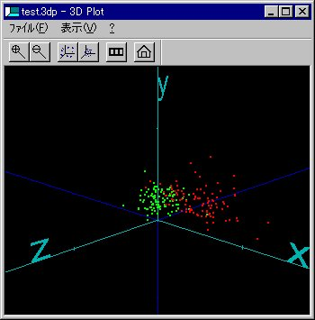
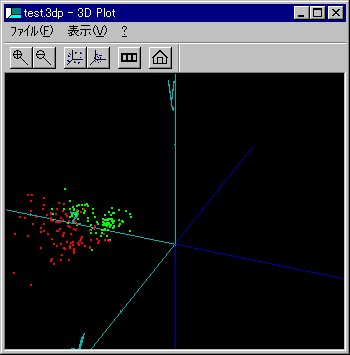
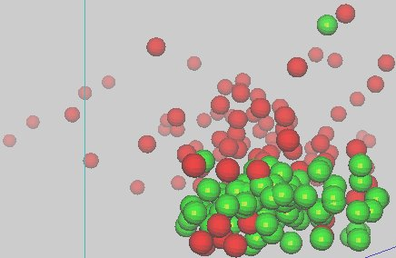

概要
OpenGL を利用したシンプルなプロッタです。グラフの回転、ズームイン・アウト、データのスケール調整、系列毎に色分け表示といった機能があります。アニメーション機能もあります。データは、普通のテキスト形式を扱えます。
稼働環境
Windows XP以降で動作します。
本プログラムは、Visual C++ 2005 でビルドしています。
ダウンロード使用方法
使い方は簡単です。3dplot.exeを適当なディレクトリにコピーし、起動してください。ファイルメニューの「開く」を使ってデータファイルを指定するか、直接ドラッグ・ドロップしてください。データが表示されるとマウスのドラッグにあわせてデータを回転させることができます。F5でズームイン、F6でズームアウトです。(詳しくは付属のReadMe.txtをご覧下さい)
データファイルは、タブまたはスペースで区切られた３つの数字を１行とするテキスト形式です。
VRML形式のファイルもデータ部分だけプロットできる場合があります。
/ コメント行
#コメント行
0246 3013 0000
0196 2963 0001
0022 2632 0004
: データ区切り文字（色分け表示の境目）
0008 2549 0005
0000 2370 0006
スクリーンショット
 

フォグ効果を使えば、データの遠近関係がわかりやすくなります。
ThinkPadの加速度センサーによる操作
ThinkPad のハードディスク保護のための加速度センサーから PC の傾きを検出して、座標系を回転させることができます。( ただし X40 でしか動作確認していません。)